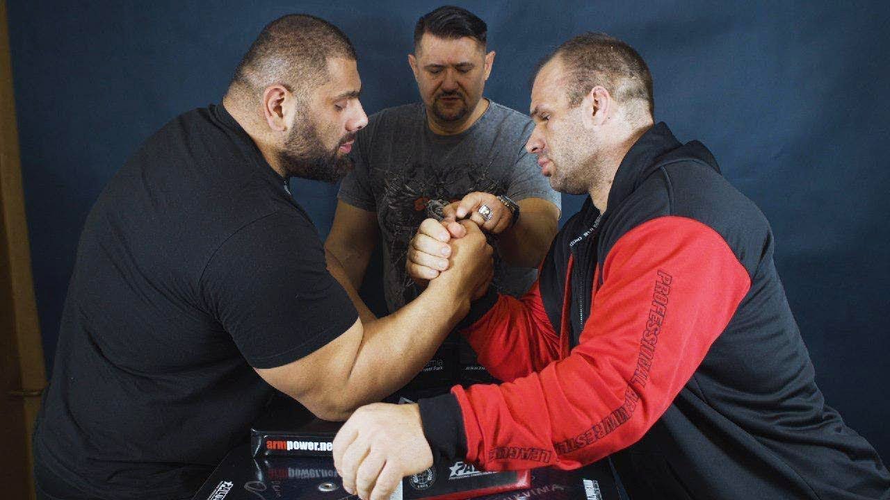
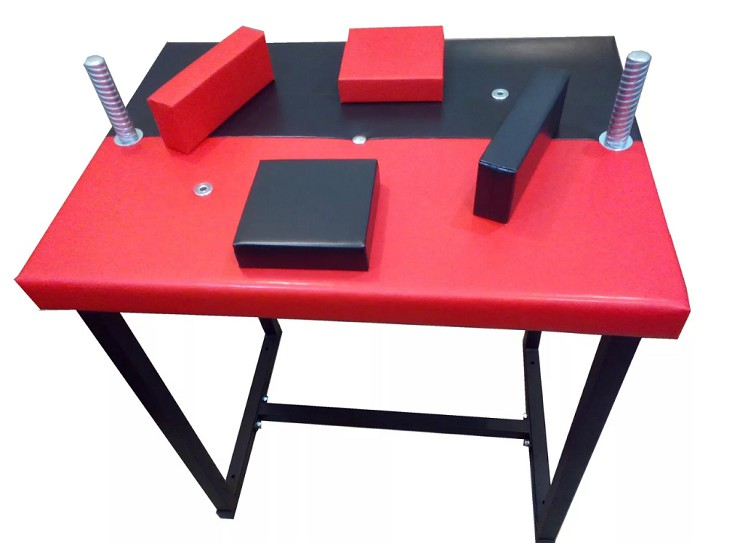
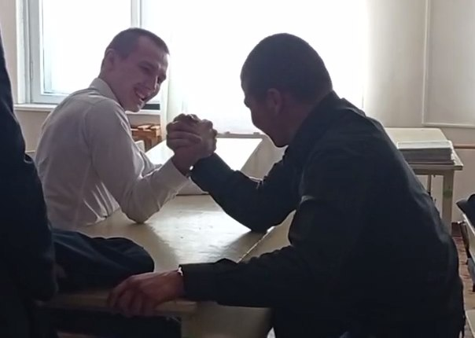

Армреслинг
Армрестлинг (рус. Рукоборие; от англ. Arm sport, arm wrestling, arm — рука) — вид борьбы на руках между двумя участниками (вид Спортивных единоборств). Во время матча одноимённые руки соревнующихся ставятся на твёрдую, ровную поверхность (как правило, стол), и ладони сцепляются в замок. Задачей соревнующегося рукоборца является прижатие руки противника к поверхности. На участников поединка накладывается ряд временных, технических и тактических ограничений. Не являясь олимпийским видом спорта, борьба на руках тем не менее популярна во многих частях света. Является древнейшим видом спорта, который был возрождён в 1960-е годы в США. В сентябре 1962 года в г. Петалума, штат Калифорния был проведён первый чемпионат мира по ристрестлингу — так была названа эта борьба (англ. wrist wrestling, дословно — «борьба запястьями»).
В 1990-х годах этот спорт получил распространение и в России — начинался в стране в 1989 году матчевой встречей СССР—США—Канада. Тогда все советские спортсмены, за исключением олимпийского чемпиона по тяжёлой атлетике Султана Рахманова, проиграли свои поединки. Выводы были сделаны правильные, и за прошедшие годы советские и российские спортсмены добились выдающихся успехов. Первым чемпионом мира из СССР стал Казбек Золоев 10 октября 1992 года (г. Петалума, Калифорния) в весовой категории до 180 фунтов. Много раз чемпионами мира становились Казбек Золоев, Маирбек и Хаджимурат Золоевы, украинцы Р. Бабаев, Е. Прудник и А. Пушкарь, а также россияне А. Кузнецов, И. Турчинская, Виктория Габагкова, Ибрагим Ибрагимов, А. Юньков, Алан Караев, Денис Цыпленков и другие. Благодаря регулярным победам на чемпионатах мира и Европы Россия закрепила лидирующее место в этом виде спорта.



Условия армреслинга
1. Нерабочей рукой хватаемся за штырь. Важно: нельзя полностью отпускать штырь.
2. Руки спортсменов выставляются таким образом, чтобы захват был посередине, фаланги пальцев должны быть открытыми. Важно: нельзя закрывать пальцы соперника.
3. Плечи спортсменов должны быть параллельно столу.
4. Локоть борющейся руки упирается в подушку на столе. Важно: скользить локтем по подушке можно, отрывать локоть от неё – нельзя.
5. Займите удобную для вас стойку. Ногами можно даже упереться в ножки стола, на котором вы боретесь. Важно: если ваши ноги будут мешать сопернику, судья остановит игру.
Главная страница
Армреслинг
Воркаут
Баскетбол